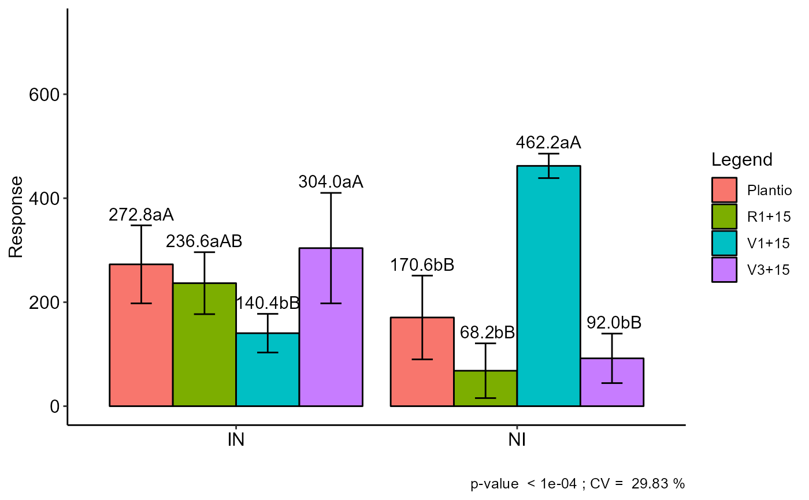
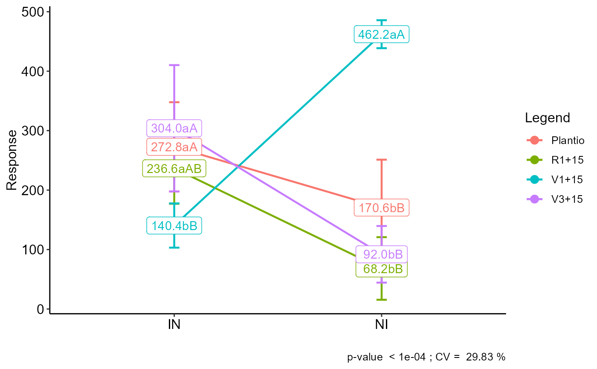

plot_interaction.RdPerforms an interaction graph from an output of the FAT2DIC, FAT2DBC, PSUBDIC or PSUBDBC commands.
plot_interaction( a, box_label = TRUE, repel = FALSE, pointsize = 3, linesize = 0.8, width.bar = 0.05, add.errorbar = TRUE )
| a | FAT2DIC, FAT2DBC, PSUBDIC or PSUBDBC object |
|---|---|
| box_label | Add box in label |
| repel | a boolean, whether to use ggrepel to avoid overplotting text labels or not. |
| pointsize | Point size |
| linesize | Line size (Trendline and Error Bar) |
| width.bar | width of the error bars. |
| add.errorbar | Add error bars. |
Returns an interaction graph with averages and letters from the multiple comparison test
Gabriel Danilo Shimizu, shimizu@uel.br
Leandro Simoes Azeredo Goncalves
Rodrigo Yudi Palhaci Marubayashi
#> #> #>#> #> #>#> #> #>#> #> #>#> #> #>#> #> #>#> #> #>#> #> #>#> #> #>#> #> #>#> #> #>#> #> #>#> #> #>#> #> #>#> #> #>#> #> #>#> #> #>#> #> #>#> #> #>#> #> #>#> #> #>#> #> #>#> #> #>#> #> #>#> #> ----------------------------------------------------------------- #> Normality of errors #> ----------------------------------------------------------------- #> Method Statistic p.value #> Shapiro-Wilk normality test(W) 0.9680878 0.3125183 #>#> As the calculated p-value is greater than the 5% significance level, hypothesis H0 is not rejected. Therefore, errors can be considered normal#> #> ----------------------------------------------------------------- #> Homogeneity of Variances #> ----------------------------------------------------------------- #> Method Statistic p.value #> Bartlett test(Bartlett's K-squared) 9.875441 0.1957427 #>#> As the calculated p-value is greater than the 5% significance level, hypothesis H0 is not rejected. Therefore, the variances can be considered homogeneous#> #> ----------------------------------------------------------------- #> Independence from errors #> ----------------------------------------------------------------- #> Method Statistic p.value #> Durbin-Watson test(DW) 2.092504 0.1892105 #>#> As the calculated p-value is greater than the 5% significance level, hypothesis H0 is not rejected. Therefore, errors can be considered independent#> #> ----------------------------------------------------------------- #> Additional Information #> ----------------------------------------------------------------- #> #> CV (%) = 29.83 #> Mean = 218.35 #> Median = 185 #> Possible outliers = No discrepant point #> #> ----------------------------------------------------------------- #> Analysis of Variance #> ----------------------------------------------------------------- #> Df Sum Sq Mean.Sq F value Pr(F) #> Fator1 1 16160.4 16160.4 3.810516 5.972867e-02 #> Fator2 3 116554.5 38851.5 9.160929 1.596453e-04 #> Fator1:Fator2 3 452096.2 150698.7 35.533773 2.663131e-10 #> Residuals 32 135712.0 4241.0 #>#>#> ----------------------------------------------------------------- #> Significant interaction: analyzing the interaction #> ----------------------------------------------------------------- #> #> ----------------------------------------------------------------- #> Analyzing F1 inside of each level of F2 #> ----------------------------------------------------------------- #> #> Df Sum Sq Mean Sq F value Pr(>F) #> Fator2 3 116555 38852 9.1609 0.0001596 *** #> Fator2:Fator1 4 468257 117064 27.6030 5.661e-10 *** #> Fator2:Fator1: Plantio 1 26112 26112 6.1571 0.0185315 * #> Fator2:Fator1: V1+15 1 258888 258888 61.0441 6.522e-09 *** #> Fator2:Fator1: V3+15 1 112360 112360 26.4938 1.295e-05 *** #> Fator2:Fator1: R1+15 1 70896 70896 16.7169 0.0002728 *** #> Residuals 32 135712 4241 #> --- #> Signif. codes: 0 '***' 0.001 '**' 0.01 '*' 0.05 '.' 0.1 ' ' 1 #> #> ----------------------------------------------------------------- #> Analyzing F2 inside of the level of F1 #> ----------------------------------------------------------------- #> #> Df Sum Sq Mean Sq F value Pr(>F) #> Fator1 1 16160 16160 3.8105 0.059729 . #> Fator1:Fator2 6 568651 94775 22.3474 3.699e-10 *** #> Fator1:Fator2: IN 3 75470 25157 5.9318 0.002454 ** #> Fator1:Fator2: NI 3 493181 164394 38.7629 9.117e-11 *** #> Residuals 32 135712 4241 #> --- #> Signif. codes: 0 '***' 0.001 '**' 0.01 '*' 0.05 '.' 0.1 ' ' 1#> #> ----------------------------------------------------------------- #> Final table #> ----------------------------------------------------------------- #> Plantio V1+15 V3+15 R1+15 #> IN 272.8 aA 140.4 bB 304.0 aA 236.6 aAB #> NI 170.6 bB 462.2 aA 92.0 bB 68.2 bB#> #> #> #>plot_interaction(a)